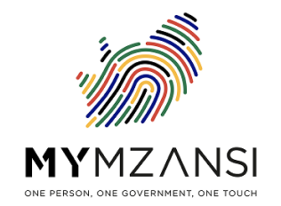
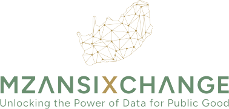

Connected Government
Break down silos and improve coordination across departments and spheres of government.
DigiGovSA is the National Treasury's flagship initiative to modernise South Africa's financial transversal systems and establish the digital foundations required for a more efficient and secure government.
In collaboration with:


The Case for Change
Many of government's most important administrative systems were designed for a different era. Fragmented processes, disconnected information and ageing technology make it increasingly difficult to deliver services efficiently, respond to changing needs and protect against emerging cyber threats.
DigiGovSA is supporting the modernisation of these foundational systems through a secure, cloud-enabled and interoperable digital architecture designed for the future.
Break down silos and improve coordination across departments and spheres of government.
Enable secure information sharing with verifiable provenance and governed access.
Protect critical government systems against modern and emerging cyber threats.
Leverage cloud, automation and AI to deliver responsive, modern public services.
A New Approach
DigiGovSA represents a strategic shift away from large monolithic implementations towards a flexible and composable architecture built from interoperable digital building blocks.
This approach allows government to adopt the best available technologies for specific functions while avoiding vendor lock-in and reducing implementation risk.
DigiGovSA enables smarter workflows, improved oversight and more responsive public services.
Trust is the foundation of digital government.
DigiGovSA introduces secure digital identity, verifiable credentials and advanced verification mechanisms that protect public resources while enabling seamless access to government systems.
A secure single point of access for government officials across departments and systems.
Biometric verification and liveness testing linked to trusted national identity systems.
Alignment with SARB's Payment Ecosystem Modernisation programme.
Highlight
Real-time verification and identity assurance can help eliminate ghost workers and strengthen accountability across government.
Learning From the Past
South Africa's digital transformation journey has generated valuable lessons about complexity, governance, implementation risk and long-term sustainability. DigiGovSA was designed to apply those lessons.
Instead of relying on a single-vendor ERP strategy, DigiGovSA adopts a decentralised and modular approach that improves flexibility, reduces dependency and supports incremental delivery.
Strong governance and oversight at every layer of delivery.
Open reporting and measurable progress against public commitments.
Responsible, considered use of public resources at all times.
Past
Insight
Now
Horizon
National Initiative
DigiGovSA is helping create a connected and secure government by modernising the systems that underpin public administration.
Together with National Treasury, The Presidency, and government partners, DigiGovSA is laying the digital foundations for better services, stronger institutions and a more empowered government.
Get Connected